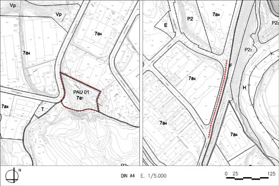

PAU 01 “Cinemàtica” (Polígon d’actuació urbanística PAU – 01)

Objectiu: Urbanitzar el tram del carrer Cinemàtica que resta pendent des del desenvolupament del PP imputable al promotor i propietari de les parcel•les incloses.
Règim del sòl: Sòl Urbà No Consolidat
| Superfície del polígon: Zones edificables: Industrial aïllada, parcel·la petita, agrupació I(clau 7a1) |
8.516 m2s 8.516 m2s |
(St) Sostre total |
(Segons aplicació de paràmetres de normes urbanístiques) |